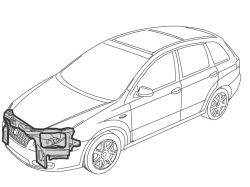
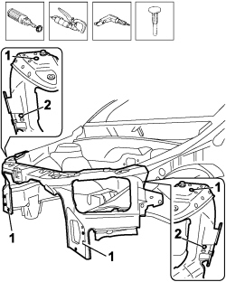
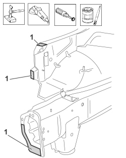
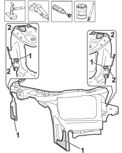
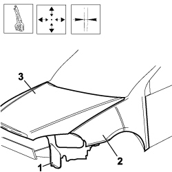
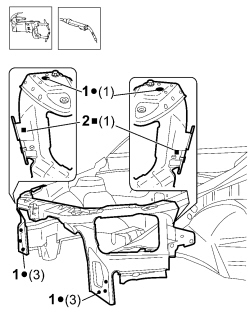

7210A15 R.R. FRONT WING/HEADLAMP HOUSING CROSSMEMBER
- Path
- Procedures > 72 PANELS AND FRAMES > 7210 REMOVING-REFITTING > 7210A STRUCTURAL ELEMENTS (FRONT PART) > 7210A15 R.R. FRONT WING/HEADLAMP HOUSING CROSSMEMBER
- Kind
- repair procedure (removal / refitting; the operation number is the code)
- Applies to
- all engines; all production periods
- Interactive page
- https://sloeber94.github.io/elrnDB-fCrm/en/#/194001214
Applies to: all engines; all production periods
 Removing
Removing
 Refitting
RefittingOp. 7210A18 R.R FRONT CROSSMEMBER
- Check that the components connected are not distorted by checking the bodyshell alignment measurements using suitable equipment (gauges, templates or jigs).
- Straighten the body as necessary.

Applies to: all engines; all production periods
- Use the rotary brush and remove the paint to access the spot welds.
1. Use the chamfering machine on the spot welds shown in the diagram.
2. Undo the bolts fixing the crossmember.
- Use the hammer and chisel and remove the spot welds chamfered previously.
- Remove the headlamp set front wing beam.

Applies to: all engines; all production periods
- Straighten the edges of the bodyshell using a mallet and dolly block.
- Remove the spot weld residues using a disc grinder.
- Use a rotary brush to clean the areas treated previously.
1. Apply electro-galvanizing paint.

Applies to: all engines; all production periods
- Remove the anti-corrosion treatment using the rotary brush from both the inside and the outside of the replacement part shown in the diagram.
1. Make the holes shown in the diagram using a drill.
2. Apply electro-weldable paint to the points treated previously.

Applies to: all engines; all production periods
Refitting
Removing1. Position the crossmember correctly on the vehicle and secure it using a few bolts.
2. Fit both wings provisionally.
3. Provisionally fit the bonnet.
- Bring the sacrificial beam up the vehicle and check the fastening holes correspond
- Check the alignment and the surrounding gaps.
- Remove the components used for the adjustment.

Applies to: all engines; all production periods
1. Use a spot welder in the areas shown in the diagram.
2. Use the MIG welder to fill weld at the points shown in the diagram.

Applies to: all engines; all production periods
- Correct any distortions to the panel using a hammer and dolly block.
- Use a disc grinder to level and remove the welding.
- Use a rotary brush to clean the areas welded previously.
1. Apply anti-oxidant protection to the areas involved in the welding.
- Seal the join lines between the replacement part and the vehicle.
- Proceed with the painting stage.
Applies to: all engines; all production periods